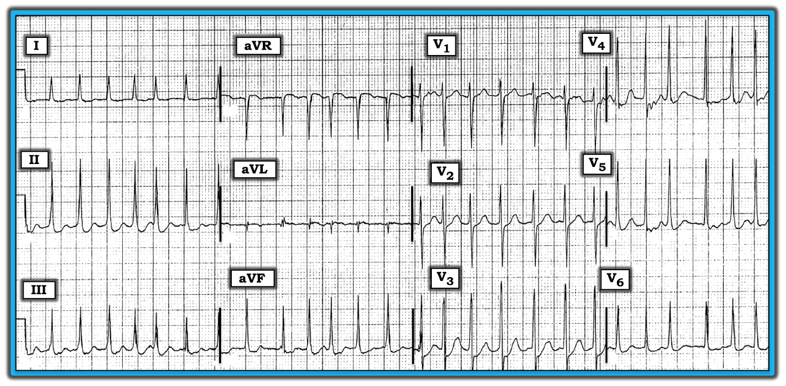
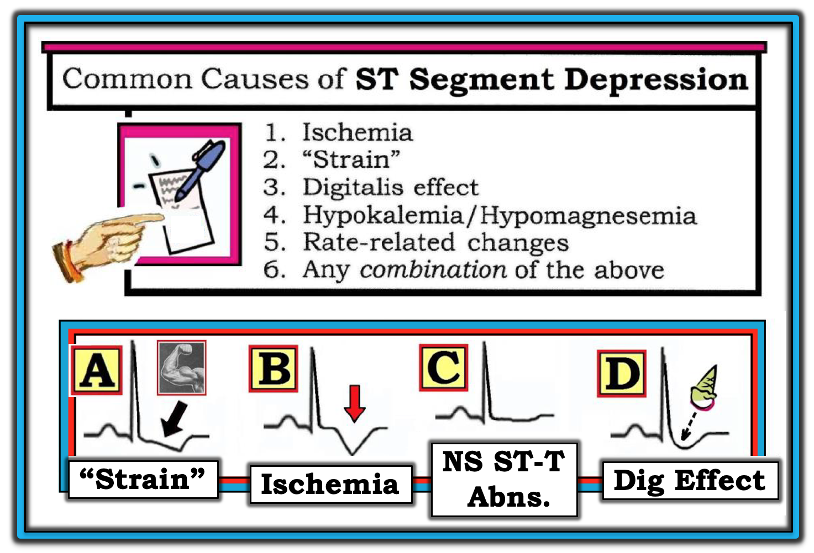
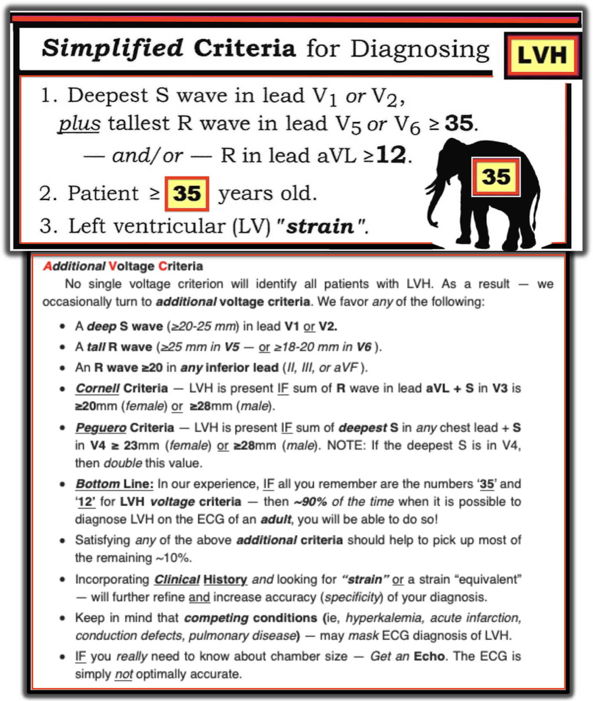
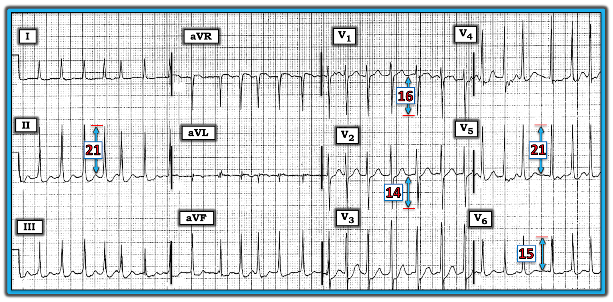

ECG Blog #166 (ST-T – AFib – LVH – SVT)
Điện tâm đồ trong Hình-1 được ghi từ một phụ nữ 65 tuổi nhập viện vì suy tim (HF) cấp. Bà đang dùng nhiều loại thuốc. Bà khó thở — và có những đợt khó chịu ở ngực từng lúc.
- Bạn sẽ diễn giải điện tâm đồ này như thế nào?
- Việc bệnh nhân này nhập viện vì HF có đáng ngạc nhiên không?
- Điều gì có thể giải thích cho các thay đổi sóng ST-T thấy ở nhiều chuyển đạo trên bản ghi này?


Phân tích mô tả của điện tâm đồ ở Hình-1:
Nhịp nhanh và không đều hoàn toàn. Không thấy sóng P ở bất kỳ chuyển đạo nào. Điều này xác định nhịp là AFib (Atrial Fibrillation — rung nhĩ) — ở đây kèm đáp ứng thất nhanh. Vì phần lớn các khoảng R-R có vẻ hơi ngắn hơn 2 ô lớn — tần số thất trung bình trên 150/phút (có lẽ trong khoảng ~160-180/phút).
- Các khoảng — Phức bộ QRS có thời gian bình thường. (Khoảng PR không có ý nghĩa khi nhịp là AFib — và khoảng QTc không có giá trị ở tần số nhanh như thấy ở đây.).
- Trục — Trục QRS trung bình bình thường (trong khoảng +60-70 độ).
- Lớn các buồng tim — Có LVH (Left Ventricular Hypertrophy — phì đại thất trái). Tổng S sâu nhất ở V1,V2 + R cao nhất ở V5,V6 ≥35 mm (Các tiêu chuẩn LVH dùng trong ca này được bàn chi tiết hơn ở phía dưới! ).
Tiếp theo, xem xét Thay đổi Q-R-S-T:
- Sóng Q — Không thấy sóng Q.
- Tăng tiến sóng R — Vùng chuyển tiếp bình thường (xảy ra giữa chuyển đạo V2 và V3, dù sóng R đã khá cao ngay ở chuyển đạo V2).
- Thay đổi sóng ST-T — Đánh giá tổng thể, có đoạn ST “lõm dạng múc” (scooping) và/hoặc chênh xuống nhẹ ở nhiều chuyển đạo. Chúng tôi mô tả đây là bất thường sóng ST-T lan tỏa NS (Non-Specific — không đặc hiệu).


Nhận định lâm sàng / Ghi chú lâm sàng: Nhịp là AFib nhanh . Ở bệnh nhân AFib mới khởi phát — việc mất “cú hích” nhĩ (atrial kick) và đáp ứng thất nhanh thường đi kèm AFib mới (làm giảm đáng kể thời gian đổ đầy tâm trương) — là những lý do khiến HF mới khởi phát và AFib rất thường đi cùng nhau!
- Điều đáng chú ý ở Hình-1 — Lưu ý sự thay đổi rõ rệt về hình dạng phức bộ QRS từ nhát này sang nhát khác ở chuyển đạo aVL. Điều này nhiều khả năng phản ánh biến thiên theo hô hấp ở bệnh nhân suy tim đang bệnh nặng cấp tính này.
- Như đã nói ở trên — có LVH.
- Có các bất thường sóng ST-T không đặc hiệu lan tỏa, có thể do i) "Tăng gánh" thất trái (LV strain); ii) Thiếu máu cục bộ; iii) Tác dụng của thuốc; iv) Rối loạn điện giải; v) Nhịp nhanh; và/hoặc, vi) Bất kỳ sự phối hợp nào của các nguyên nhân trên (Hình-2).
ĐIỀU CỐT LÕI: Có AFib nhanh — có lẽ là mới xuất hiện. Dù vậy — ít nhất các thay đổi sóng ST-T thấy ở Hình-1 có vẻ không phải là cấp tính ở bệnh nhân có khó chịu ngực từng lúc này (tức là, ngoài chuyển đạo aVL — không có ST chênh lên). Cần đối chiếu lâm sàng để xác định những nguyên nhân nào trong số các nguyên nhân gây sóng ST-T chênh xuống liệt kê ở Hình-2 có khả năng đang tác động trong ca này.

Xem kỹ hơn chẩn đoán LVH trên điện tâm đồ ở Hình-1:
- Có rất nhiều tiêu chuẩn trong y văn để chẩn đoán LVH trên điện tâm đồ. Để đơn giản — chúng tôi tóm tắt các tiêu chuẩn chúng tôi ưa dùng trong Hình-3. Chúng tôi bàn đầy đủ chủ đề này trong ECG Blog #73.
- Theo ý kiến của tôi — có một “nghệ thuật” trong chẩn đoán trên điện tâm đồ đối với LVH. Các yếu tố lâm sàng — bao gồm tuổi bệnh nhân, chủng tộc và sự hiện diện của một số bệnh tim nền (như tăng huyết áp lâu năm hoặc suy tim) khiến bệnh nhân dễ bị LVH. Do đó — ngay cả khi các tiêu chuẩn số về điện thế LVH hơi chưa đạt ngưỡng điện thế LVH thấp nhất — vẫn có thể nghi ngờ mạnh LVH “có thể có” ở người lớn tuổi có bệnh tim nền, đặc biệt nếu có các thay đổi ST-T của “tăng gánh” thất trái (LV strain) (hoặc một dạng “tương đương tăng gánh”).
- Để thuận tiện áp dụng Hình 3 — Chúng tôi đã đo biên độ sóng R và sóng S ở một số chuyển đạo chính trên điện tâm đồ của ca này, trình bày ở Hình-4. Tiêu chuẩn điện thế cho LVH được thỏa mãn trong ca này bởi: i) Tổng S ở V1 (16 mm) + R ở V5 (21 mm) ≥35 mm; và, ii) Tổng sóng R ở chuyển đạo II ≥20 mm.





Xem kỹ hơn 6 Nguyên nhân Thường gặp gây Sóng ST-T chênh xuống từ Hình-2:
- Thực ra có hơn 50 nguyên nhân gây thay đổi sóng ST-T trên điện tâm đồ. Mặc dù nhiều nguyên nhân có liên quan đến tim — cũng có nhiều nguyên nhân không liên quan đến tim. Trong số nhiều nguyên nhân ngoài tim gây thay đổi sóng ST-T có tăng thông khí; nhiệt độ khắc nghiệt (tiếp xúc nóng hoặc lạnh quá mức); lo âu hoặc căng thẳng cảm xúc; thiếu máu; nhịp nhanh; thiếu ngủ; bệnh phổi; bất thường điện giải; rối loạn hệ thần kinh trung ương; một số thuốc; và bệnh nội khoa nặng (cùng nhiều nguyên nhân khác). ĐIỀU CỐT LÕI: Thay vì cố ghi nhớ một danh sách đầy đủ các tình trạng có thể dẫn đến thay đổi sóng ST-T — chỉ cần nhận thức được sự đa dạng của các bệnh cảnh có thể tạo ra thay đổi trên điện tâm đồ. Hãy nhớ: Nhiều tình trạng trong số này là ngoài tim.
- LƯU Ý: Nói chung — nguyên nhân của các bất thường sóng T (bao gồm sóng T dẹt hoặc sóng T đảo ngược rõ) tương tự các nguyên nhân tiềm tàng của đoạn ST chênh xuống.
- ĐIỂM THEN CHỐT (PEARL) #1: Mục đích của việc lập danh sách ngắn mà chúng tôi trình bày ở Hình-2 — là để đơn giản hóa nhiệm vụ của bạn với tư cách người đọc điện tâm đồ. Ngay khi bạn nhận ra các thay đổi sóng ST-T lan tỏa trên điện tâm đồ — Hãy nghĩ đến DANH SÁCH ngắn này. Thường thì — có nhiều hơn một nguyên nhân cùng tác động. Ví dụ — bệnh nhân trong ca này là một phụ nữ lớn tuổi dùng nhiều thuốc, nhập viện vì suy tim. Do đó — bà có thể đang dùng Digoxin và/hoặc thuốc lợi tiểu (có thể góp phần gây rối loạn điện giải). Bà bị suy tim và có điện thế LVH — nên các thay đổi sóng ST-T có thể phản ánh “tăng gánh” thất trái (hoặc một dạng tương đương tăng gánh). Ngoài ra, các thay đổi sóng ST-T thấy ở Hình-1 có thể phản ánh thiếu máu cục bộ ở bệnh nhân có khó chịu ngực từng lúc này. Cuối cùng, tần số thất rất nhanh có thể góp phần làm sóng ST-T dẹt và chênh xuống, và các thay đổi này sẽ hết khi tần số chậm lại. ĐIỀU CỐT LÕI — Tất cả các nguyên nhân tiềm tàng gây sóng ST-T chênh xuống liệt kê ở Hình-2 đều có thể góp phần ở những mức độ khác nhau vào hình ảnh điện tâm đồ mà chúng ta thấy ở Hình-1.
Đ
IỂM THEN CHỐT (PEARL) #2: Hình dạng của sóng ST-T có thể gợi ý một (hoặc nhiều) thực thể nào trong 6 thực thể thuộc DANH SÁCH của chúng tôi nhiều khả năng nhất đang tác động ở một bệnh nhân cụ thể (Xem nửa dưới của Hình-2):
- Thiếu máu cục bộ — được gợi ý bởi sóng T đảo ngược đối xứng (mũi tên ĐỎ ở Ô B) — đặc biệt khi thấy ở hai chuyển đạo trở lên trong cùng một nhóm chuyển đạo (tức là, ở các chuyển đạo II, III và aVF — hoặc ở cả hai chuyển đạo I và aVL).
- Tăng gánh — do LVH, được gợi ý bởi ST chênh xuống không đối xứng ở một (hoặc nhiều) chuyển đạo bên (ít gặp hơn ở các chuyển đạo dưới). Lưu ý đoạn ST võng xuống chậm lúc đầu trong “tăng gánh” thất trái (mũi tên ĐEN ở Ô A) — rồi trở về đường nền nhanh hơn. “Tăng gánh” nhiều khả năng là nguyên nhân gây ST chênh xuống hơn khi có điện thế LVH — dù đôi khi có thể có thay đổi sóng ST-T gợi ý “tăng gánh” mà không kèm điện thế cao.
- "Tăng gánh thất phải" (RV strain) — được gợi ý NẾU hình ảnh ở Ô A của Hình-2 thấy ở các chuyển đạo bên phải (các chuyển đạo II,III,aVF; hoặc V1,V2,V3) ở bệnh nhân có RVH.
- Việc dùng Digoxin có thể ảnh hưởng đến sóng ST-T theo một trong 3 cách: i) Có thể có ST chênh xuống “dạng múc” ở nhiều chuyển đạo (giống như một chiếc ốc quế kem úp ngược, như ở Ô D của Hình-2); hoặc, ii) “Tác dụng” của Digoxin có thể tạo ra hình ảnh giống "tăng gánh" (giống hệt Ô A); hoặc, iii) Dù dùng Digoxin với liều phù hợp — có thể ít hoặc không có ảnh hưởng gì lên sóng ST-T. Theo kinh nghiệm của tôi (từ việc đối chiếu hình dạng sóng ST-T trên điện tâm đồ với nồng độ Digoxin huyết thanh trong nhiều năm) — nồng độ Digoxin huyết thanh tương quan kém với mức độ ST-T lõm dạng múc hoặc chênh xuống. Vì vậy, ngay cả khi nồng độ Digoxin huyết thanh cao — một số bệnh nhân vẫn không biểu hiện bất thường sóng ST-T — trong khi những bệnh nhân khác lại có thay đổi sóng ST-T rõ rệt dù nồng độ Digoxin huyết thanh thấp đến bất ngờ.
- Cuối cùng — Ô C ở Hình-2 cho thấy hình ảnh ST-T không đặc hiệu , trong đó sóng T và đoạn ST dẹt (nếu không muốn nói là hơi chênh xuống). Hình ảnh này được gọi là “không đặc hiệu” — vì bất kỳ nguyên nhân nào trong nhiều nguyên nhân tiềm tàng gây bất thường sóng ST-T đều có thể đang tác động.
- ĐIỀU CỐT LÕI (về các thay đổi sóng ST-T ở Hình-1) — Đoạn ST chênh xuống có dạng lõm dạng múc ở nhiều chuyển đạo. Do đó chúng ta cần tìm hiểu XEM bệnh nhân đang dùng nhiều thuốc này (và đang suy tim) có dùng Digoxin hay không? Dù vậy — bất kỳ (hoặc tất cả) nguyên nhân nào liệt kê ở Hình-2 đều có thể góp phần vào các thay đổi sóng ST-T mà chúng ta thấy ở Hình-1.